1. Keeping a local copy of the cluster
This chapter depicts what happens under the hood when a Kubernetes controller learns that an object in the cluster has changed. We’ll examine how the API server numbers every write, how a client combines a list and a stream of changes into an exact copy of the cluster, what the client does when that stream breaks, and how the copy is turned into work. We’ll build each of these pieces as a small program in Go and in Rust, starting with the data structures and adding one operation at a time, and we’ll finish by running the whole model through a burst of edits, a dropped connection and a network partition.
The controller and its objects
Our running example is a program that runs GPU training jobs. When a user creates a job that needs 1 GPU, the program starts a container for it on a machine with a free GPU. When the user later raises the job to 2 GPUs, the program replaces the container, and when the user deletes the job, the program stops the container and releases the GPU. A program of this kind, which compares the state a user has requested with the state of the cluster and acts until the 2 agree, is called a controller in Kubernetes.
Kubernetes records each job as an object, a named record that the API server stores. An object
has 2 main parts. The spec, also known as the desired state, is written by the user; for our
job it says how many GPUs the job needs. The status, also known as the observed state, is
written by the controller; it says how many GPUs the job actually has. Keeping the 2 apart means
that each part has exactly 1 writer. The user never edits the status, and the controller never
edits the spec, so the controller can always tell what was requested from what it has done so far.
A job named job-a that has just been created has a spec of 1 GPU and a status of 0 GPUs, and the
controller’s work is finished when the status reaches 1.
Listing 1.1 gives the object in our model. A real Kubernetes object carries much more, such as labels, an owner and a container image, but a GPU count in each half is enough for every mechanism in this chapter. The last field, the resource version, is explained in the next 2 sections.
Listing 1.1 An object, with its spec and its status. Go · Rust
// Spec is the part of an object that a user writes: the desired state.
type Spec struct {
// GPUs is the number of GPUs the job asks for.
GPUs int
}
// Status is the part of an object that the controller writes: the observed state.
type Status struct {
// GPUs is the number of GPUs the controller has provided to the job.
GPUs int
}
// Object is one stored record, such as a training job.
type Object struct {
// Name identifies the object on the server.
Name string
// Spec holds what the user asked for.
Spec Spec
// Status holds what the controller has done about it.
Status Status
// ResourceVersion is the server's write counter at the object's latest change.
ResourceVersion int
}
// String formats an object for the demonstration's log lines.
func (o Object) String() string {
return fmt.Sprintf("%s{spec.GPUs: %d, status.GPUs: %d, v%d}",
o.Name, o.Spec.GPUs, o.Status.GPUs, o.ResourceVersion)
}
/// The part of an object that a user writes: the desired state.
#[derive(Clone, Copy, Debug, Default, PartialEq, Eq)]
pub struct Spec {
/// Number of GPUs the job asks for.
pub gpus: u32,
}
/// The part of an object that the controller writes: the observed state.
#[derive(Clone, Copy, Debug, Default, PartialEq, Eq)]
pub struct Status {
/// Number of GPUs the controller has provided to the job.
pub gpus: u32,
}
/// One stored record, such as a training job.
#[derive(Clone, Debug, Default, PartialEq, Eq)]
pub struct Object {
/// Identifies the object on the server.
pub name: String,
/// What the user asked for.
pub spec: Spec,
/// What the controller has done about it.
pub status: Status,
/// The server's write counter at the object's latest change.
pub resource_version: u64,
}
impl Object {
/// Returns a new object with the given name and GPU request, an empty
/// status, and no resource version.
pub fn new(name: &str, gpus: u32) -> Self {
Self {
name: name.to_string(),
spec: Spec { gpus },
..Self::default()
}
}
}
impl fmt::Display for Object {
/// Formats an object for the demonstration's log lines.
fn fmt(&self, f: &mut fmt::Formatter<'_>) -> fmt::Result {
write!(
f,
"{}{{spec.gpus: {}, status.gpus: {}, v{}}}",
self.name, self.spec.gpus, self.status.gpus, self.resource_version
)
}
}All objects are kept by 1 HTTP service, the API server, which persists them in etcd, a
replicated key-value store. Users, kubectl and controllers all read and write objects through the
API server, and none of them talks to etcd directly. A controller therefore needs 2 things from
the API server: an exact view of every object of its kind, and notice of each change soon after it
happens.
The cost of asking for everything
The simplest way for a controller to obtain both is to ask the API server for every job every few seconds and compare the answer with what it is running. We can estimate the cost of this approach for a large cluster. Suppose the cluster runs 50,000 pods and each pod is about 4 KB of JSON. A single request for all pods then transfers 50,000 × 4 KB = 200 MB. If 12 controllers each repeat the request every 5 seconds, the API server sends 12 × 200 MB ÷ 5 s = 480 MB every second. Between 2 requests, perhaps 3 pods have changed, so almost all of those bytes describe objects that the controller already knew about. On our own lab fleet, 5 Jetson AGX Thors, 2 DGX Sparks and a Jetson Orin NX Super, a few hundred pods fit in well under 1 MB and polling works, and so the approach is tempting. Its cost grows with the size of the cluster, while the useful information it returns grows only with the rate of change.
Kubernetes inherited the answer to this problem from its predecessors at Google. Borg kept the state of a cluster in a central master, and Omega, described in 2013, let many schedulers share 1 copy of that state and settle clashing updates with version checks instead of locks. Kubernetes, announced in 2014, kept the version checks and added a stream of changes, so that a client reads the whole state once and then receives only the changes. The rest of this chapter builds that mechanism one step at a time.
Numbering every write
A stream of changes needs a way to name a point in the history of the store, so that a client whose connection breaks can ask for every change after the last one it received. etcd provides such a name. It keeps 1 counter, called the revision, for the whole store, and every create, update and delete of any key takes the next value of that counter. etcd also keeps the older values of each key under their old revisions until a clean-up removes them.
Fig. 1.1 shows 12 writes to 4 keys. The top row is the history in the order of the writes, coloured
by the key that each write changed. The rows below form etcd’s key index, which lists for each key
the revisions that wrote it. For example, job-a was written at revisions 1, 4, 5, 9 and 11, and
pod-1 at revisions 3 and 8.
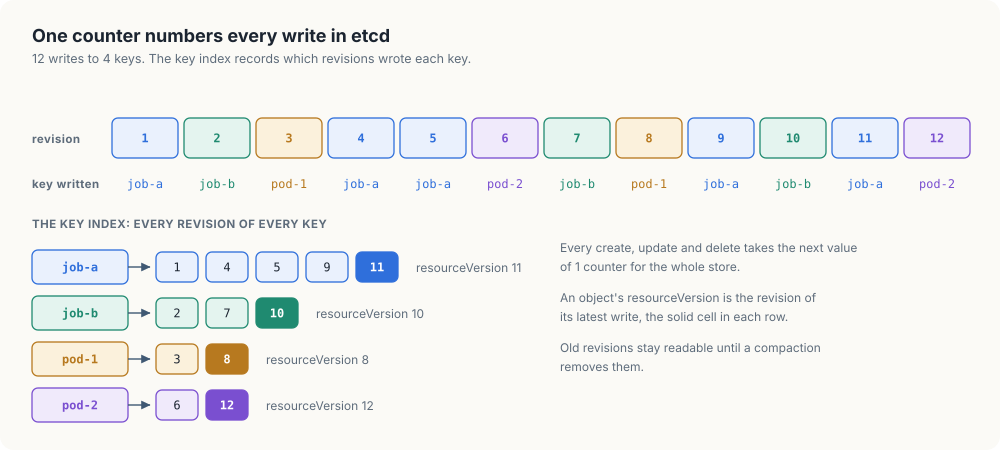
Kubernetes passes the revision on to its clients as the resource version. The resource version
of an object is the revision of the last write that changed it, so in Fig. 1.1 the resource version
of job-a is 11 and that of pod-1 is 8. A list of objects also carries a resource version, which
is the revision of the whole store at the moment the list was read.1 This single number
lets a client say exactly how far its knowledge of the cluster goes.
Each change that the API server reports to a client is an event. An event has a type, ADDED,
MODIFIED or DELETED, and it carries the whole object as it was after the change, or its last
state for a deletion. Sending the whole object, rather than only the fields that changed, means that
a client can apply an event without knowing anything about the object’s earlier state. Listing 1.2
gives the event, together with the 3 errors that the server can return. We’ll meet 409 Conflict
in the next section and 410 Gone when we discuss lost history.
Listing 1.2 Events, and the errors the server returns. Go · Rust
// EventType is the kind of change that an Event records.
type EventType int
// The kinds of change that a watch reports.
const (
Added EventType = iota // the object was created
Modified // the object was updated
Deleted // the object was removed
)
// String returns the name that the Kubernetes watch protocol uses for t.
func (t EventType) String() string {
return [...]string{"ADDED", "MODIFIED", "DELETED"}[t]
}
// Event records one change to one object.
type Event struct {
// Type is the kind of change.
Type EventType
// Object is the object after the change, or its final state if it was deleted.
Object Object
}
// Errors that the server returns. The first two carry the HTTP status codes
// that the Kubernetes API server uses for the same conditions.
var (
// ErrGone reports that the history a watch needs has been discarded.
ErrGone = errors.New("410 Gone: resource version too old")
// ErrConflict reports a conditional write whose resource version is out of date.
ErrConflict = errors.New("409 Conflict: object has been modified")
// ErrUnreachable reports that the client cannot reach the server.
ErrUnreachable = errors.New("server unreachable")
)
/// The kind of change that an [`Event`] records.
#[derive(Clone, Copy, Debug, PartialEq, Eq)]
pub enum EventType {
/// The object was created.
Added,
/// The object was updated.
Modified,
/// The object was removed.
Deleted,
}
/// One change to one object.
#[derive(Clone, Debug)]
pub struct Event {
/// The kind of change.
pub kind: EventType,
/// The object after the change, or its final state if it was deleted.
pub object: Object,
}
/// Errors that the server returns. The first two carry the HTTP status codes
/// that the Kubernetes API server uses for the same conditions.
#[derive(Clone, Copy, Debug, PartialEq, Eq)]
pub enum ApiError {
/// The history that a watch needs has been discarded.
Gone,
/// A conditional write carried an out-of-date resource version.
Conflict,
/// The client cannot reach the server.
Unreachable,
}
impl fmt::Display for ApiError {
/// Formats the error the way the Kubernetes API server reports it.
fn fmt(&self, f: &mut fmt::Formatter<'_>) -> fmt::Result {
f.write_str(match self {
Self::Gone => "410 Gone: resource version too old",
Self::Conflict => "409 Conflict: object has been modified",
Self::Unreachable => "server unreachable",
})
}
}Two writers and one object
The resource version also solves a problem that has nothing to do with streams. A client updates
an object by sending the whole object back to the API server. Consider 2 clients that both read
job-a at resource version 7. Client A raises the job’s GPU count and sends the job back. A moment
later, client B changes the job’s container image and sends its copy back as well. Client B’s copy
still holds the GPU count it read at version 7, so its write replaces client A’s change with the
old value. Neither client receives an error, and the GPU change is simply gone. This failure is
called a lost update.
The API server prevents it by letting each write state the resource version it was based on.
Fig. 1.2 traces the same 2 clients under that rule. Both read version 7 at markers ➋ and ➍. At
marker ➎ client A sends its change with “read at version 7”; the object is still at version 7, so at
➏ the server accepts the write and stores it as version 8. At ➐ client B sends its change, also
with “read at version 7”. The object is now at version 8, so at ➑ the server refuses the write
with 409 Conflict. Client B then reads the job again, applies its image change to version 8, and
at ➓ the write succeeds as version 9, which holds both changes.
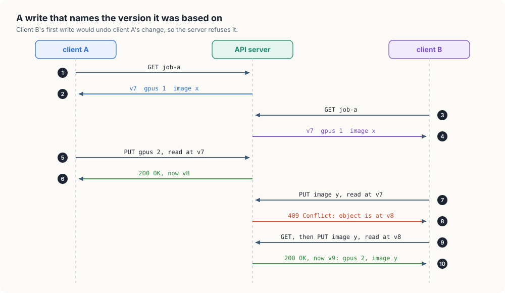
This technique is called optimistic concurrency control, also known as compare-and-set. No client locks the object while it works. Each client assumes that nobody else will write the object in the meantime, and the server detects the cases where that assumption was wrong when the write arrives. The cost of a wrong assumption is 1 extra read and 1 extra write, which is small when clashes are rare, as they are for most Kubernetes objects.
We now have enough to build the server’s side of these rules. Fig. 1.3 shows the state that our model API server keeps after 10 writes. There are 4 fields behind 1 lock. The objects map holds the current version of each object. The version counter plays the role of etcd’s revision. The history holds recent events in order, and the watches are the open streams of changes, which the next section introduces. A fifth field, compacted, records how much of the oldest history has been discarded.
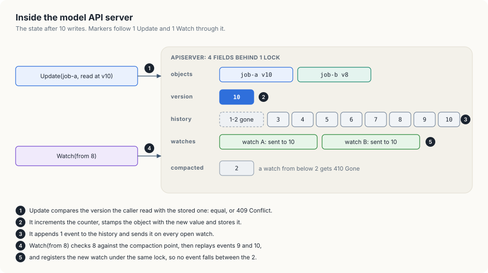
Listing 1.3 declares these fields. The field unreachable has no counterpart in Kubernetes; our
demonstration sets it to make the server behave as if a network partition had cut it off.
Listing 1.3 The state of the API server. Go · Rust
// APIServer stores objects and streams their changes to watchers. Its methods
// are safe for concurrent use.
type APIServer struct {
// mu guards every field below.
mu sync.Mutex
// version is the last resource version the server handed out.
version int
// objects holds the current state of every object, keyed by name.
objects map[string]Object
// history holds the events newer than compacted, oldest first.
history []Event
// compacted is the oldest version from which a watch may resume.
compacted int
// watches holds one channel for each open watch.
watches []chan Event
// unreachable makes new watches fail, to simulate a network partition.
unreachable bool
}
// NewAPIServer returns an empty server.
func NewAPIServer() *APIServer {
return &APIServer{objects: map[string]Object{}}
}
/// Everything the server stores, kept behind one lock.
#[derive(Default)]
struct State {
/// The last resource version the server handed out.
version: u64,
/// The current state of every object, keyed by name.
objects: HashMap<String, Object>,
/// The events newer than `compacted`, oldest first.
history: Vec<Event>,
/// The oldest version from which a watch may resume.
compacted: u64,
/// One sender for each open watch.
watches: Vec<Sender<Event>>,
/// Makes new watches fail, to simulate a network partition.
unreachable: bool,
}
impl State {
/// Appends `event` to the history and sends it to every open watch.
/// Watches whose receiver has gone away are forgotten.
fn publish(&mut self, event: Event) {
self.watches.retain(|w| w.send(event.clone()).is_ok());
self.history.push(event);
}
}
/// Stores objects and streams their changes to watchers. Its methods are safe
/// to call from several threads.
#[derive(Default)]
pub struct ApiServer {
/// Guards all of the server's data.
state: Mutex<State>,
}
impl ApiServer {
/// Locks the server's data.
fn state(&self) -> std::sync::MutexGuard<'_, State> {
self.state.lock().expect("server lock poisoned")
}
}The update path follows markers ➊ to ➌ in Fig. 1.3. The server first compares the version that the
caller read with the version it has stored, and returns 409 Conflict if they differ. It then
increments the counter, stamps the object with the new value, stores it, and publishes 1 event to
the history and to every open watch. In our model a version of 0 means that the caller wants to
write unconditionally, which the demonstration uses to play a user editing a job, and an object
that does not exist yet counts as version 0.
Listing 1.4 An update that checks the version it was based on. Go · Rust
// Update creates or replaces an object and returns ErrConflict if the write's
// condition fails. A non-zero o.ResourceVersion is a condition: the caller read
// the object at that version and wants the write applied only if the object is
// still at it. A zero ResourceVersion writes unconditionally.
func (s *APIServer) Update(o Object) error {
s.mu.Lock()
defer s.mu.Unlock()
current, exists := s.objects[o.Name]
if o.ResourceVersion != 0 && o.ResourceVersion != current.ResourceVersion {
return ErrConflict
}
eventType := Modified
if !exists {
eventType = Added
}
s.version++
o.ResourceVersion = s.version
s.objects[o.Name] = o
s.publish(Event{eventType, o})
return nil
}
impl ApiServer {
/// Creates or replaces an object. A non-zero `resource_version` is a
/// condition: the caller read the object at that version and wants the
/// write applied only if the object is still at it. Zero writes
/// unconditionally.
pub fn update(&self, mut object: Object) -> Result<(), ApiError> {
let mut state = self.state();
let current = state.objects.get(&object.name);
let current_version = current.map_or(0, |o| o.resource_version);
if object.resource_version != 0 && object.resource_version != current_version {
return Err(ApiError::Conflict);
}
let kind = if current.is_some() {
EventType::Modified
} else {
EventType::Added
};
state.version += 1;
object.resource_version = state.version;
state.objects.insert(object.name.clone(), object.clone());
state.publish(Event { kind, object });
Ok(())
}
}The check, the increment and the store all happen while the lock is held. If the lock were released between the check and the store, 2 writers could both pass the check against version 7 before either stored its result, and the lost update would return. Note that the lock is held only for the time of a few map operations, so it does not limit the server’s throughput in our model; the real API server delegates the same check to etcd, which performs it as a single transaction.
A watch that starts late misses writes
With numbered writes, a client can build an exact copy of the cluster in 2 requests. First it
sends a list, which returns every object of a kind together with the revision at which the
list was read. Then it opens a watch, a long-lived request that returns 1 event for each
change after a given revision: ADDED, MODIFIED or DELETED, each carrying the object as it
was after the change.
A bank statement and a stream of alerts. Think of how you’d keep track of a bank account without visiting the branch. You ask for a statement, and the statement ends with “balance after transaction 10”. Then you sign up for text alerts. If you ask for alerts “from transaction 10 onwards”, you’ll get transaction 11, which happened while you were reading the statement, and everything after it. If you ask for alerts “from now”, you’ll miss transaction 11 for good, and your balance will be wrong until you ask for another statement. The analogy breaks down in one place: a real bank keeps every transaction forever, while the API server keeps only a few minutes of recent changes, which is the subject of the next section. Mapping it back: the statement is the list, “transaction 10” is the list’s resource version, the alerts are the watch, and asking for alerts “from 10” is opening the watch from the list’s version.
The list and the watch are 2 separate requests, and other clients keep writing between them. Figure 1.4 shows a list read at version 10, an edit at version 11, and a watch that opens when the store is already at version 12. In the top row the watch asks for changes after 10, so the server replays 11 and 12 from its history and then carries on with new events. In the bottom row the watch asks for changes after the current version, 12, and the edits at 11 and 12 are never delivered.
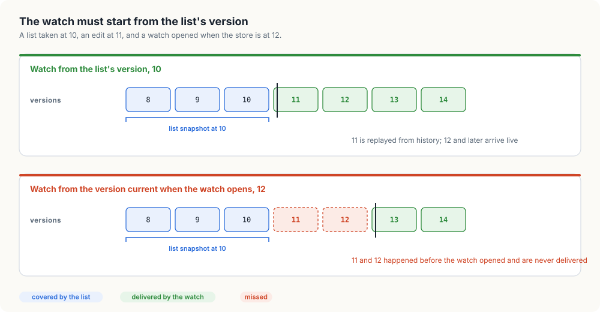
Invariant 1.1 (No gap, no duplicate). If a client lists at version v and then watches from v, its copy after applying events up to version u equals the store at version u. The list covers every write up to v, and the watch delivers every write after v exactly once.
Listing 1.5 is the server’s side of that promise, markers ➍ and ➎ of Figure 1.3. Watch holds
the same lock as Update while it replays the history and registers the new watch, so every event
lands either in the replay or on the new channel, never in neither and never in both.
Listing 1.5 List, and watch from a version. Go · Rust
// List returns every object, sorted by name, and the version at which the
// snapshot was taken.
func (s *APIServer) List() ([]Object, int) {
s.mu.Lock()
defer s.mu.Unlock()
byName := func(a, b Object) int { return strings.Compare(a.Name, b.Name) }
return slices.SortedFunc(maps.Values(s.objects), byName), s.version
}
// Watch returns a channel that first delivers the stored events newer than
// version and then every new event, until the server closes it.
func (s *APIServer) Watch(version int) (<-chan Event, error) {
s.mu.Lock()
defer s.mu.Unlock()
switch {
case s.unreachable:
return nil, ErrUnreachable
case version < s.compacted:
return nil, ErrGone
}
w := make(chan Event, 1024)
for _, e := range s.history {
if e.Object.ResourceVersion > version {
w <- e
}
}
s.watches = append(s.watches, w)
return w, nil
}
impl ApiServer {
/// Returns every object, sorted by name, and the version at which the
/// snapshot was taken.
pub fn list(&self) -> (Vec<Object>, u64) {
let state = self.state();
let mut objects: Vec<Object> = state.objects.values().cloned().collect();
objects.sort_by(|a, b| a.name.cmp(&b.name));
(objects, state.version)
}
/// Returns a receiver that first delivers the stored events newer than
/// `version` and then every new event, until the server drops the watch.
pub fn watch(&self, version: u64) -> Result<Receiver<Event>, ApiError> {
let mut state = self.state();
if state.unreachable {
return Err(ApiError::Unreachable);
}
if version < state.compacted {
return Err(ApiError::Gone);
}
let (sender, receiver) = channel();
for event in &state.history {
if event.object.resource_version > version {
sender.send(event.clone()).expect("receiver is held here");
}
}
state.watches.push(sender);
Ok(receiver)
}
}The real API server doesn’t send every watch to etcd. For each kind of object it keeps a watch cache: the current objects and a window of recent events in memory, fed by 1 etcd watch, and it serves most watches from there. Since Kubernetes 1.31 it serves consistent lists from that cache too, after checking that the cache has caught up with etcd’s latest revision.
The server forgets old history
A watch can replay only events the server still has. etcd keeps every revision of every key until
it’s told to throw old ones away. That clean-up is called compaction, and kube-apiserver asks
for one every 5 minutes by default. When a client asks to resume from a revision older than what’s
left, the API server answers 410 Gone, and the only way back to an exact copy is a fresh list.
Watches also end for ordinary reasons. kube-apiserver closes every watch after a random timeout between 30 and 60 minutes, so that thousands of clients don’t all reconnect at once. A load balancer may drop a connection that’s been quiet too long. A network partition may make the server unreachable for a while. Figure 1.5 shows the 3 endings and what a client does after each. The variable v is the version of the last event the client applied, and since its copy is exact up to v, resuming from v is correct in the first 2 cases.
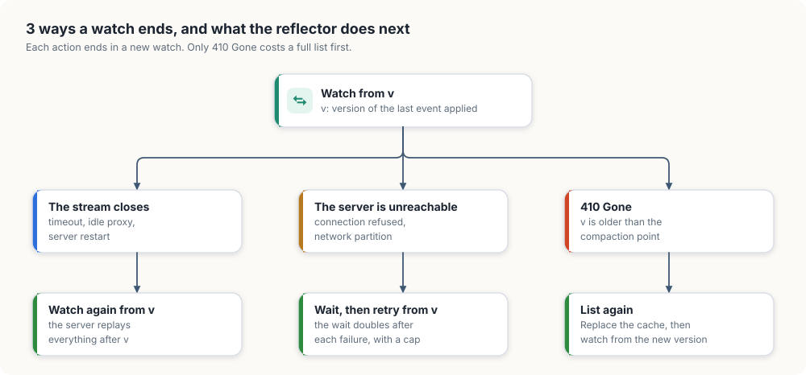
410 Gone costs a full list. The other 2 endings resume from the last version applied.A watch on a kind of object that rarely changes receives few events, so its v can fall behind the next compaction even though nothing was missed. To avoid that needless relist, the API server sends bookmark events, which carry a resource version and no object, and move a quiet watch’s position forward.
Deletions that no event reports
Once we’ve listed and are watching, we can keep our own copy of every object in memory. We call it the cache. Reading an object becomes a map lookup, and the API server sends each change to our process once.
The cache needs 2 operations. Apply records 1 event. Replace installs a fresh list, and it has a
job that events can’t do. When we relist after 410 Gone, some objects may have been deleted while
we were cut off, and their DELETED events went away with the compaction. Nobody will ever send us
those events. The only evidence is that an object is in our old cache and missing from the new list.
Figure 1.6 compares the 2 for 4 objects.
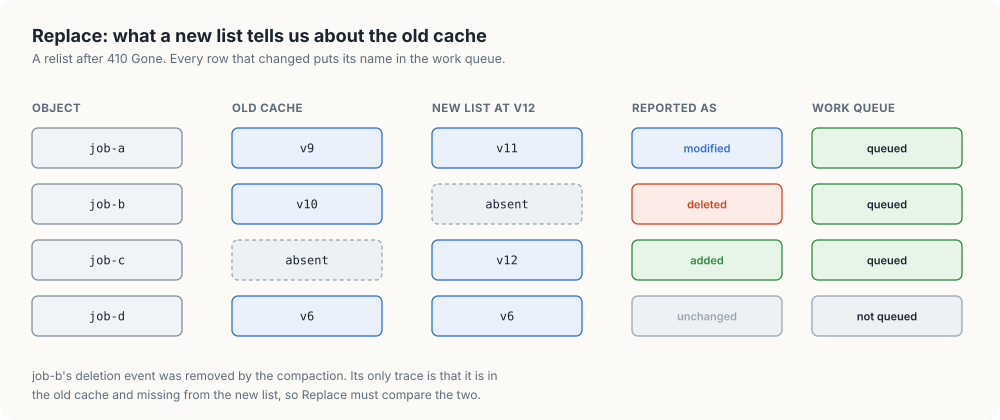
job-b's deletion has no event left anywhere.Algorithm 1.1 Replace(cache, list) returns the names that changed
- changed ← an empty list
- for each object o in list: if cache has no entry for o.name, or its version differs from o.version, append o.name to changed
- for each name n in cache that isn’t in list: append n to changed
- cache ← the objects of list, by name
- return changed
Listing 1.6 Replace. Go · Rust
// Replace installs the result of a fresh list and returns the names of the
// objects that changed, including objects that disappeared while the client
// was not watching.
func (c *Cache) Replace(list []Object) []string {
c.mu.Lock()
defer c.mu.Unlock()
old := c.objects
c.objects = make(map[string]Object, len(list))
var changed []string
for _, o := range list {
c.objects[o.Name] = o
// A name missing from old reads as version 0, so it counts as changed.
if old[o.Name].ResourceVersion != o.ResourceVersion {
changed = append(changed, o.Name)
}
}
for name := range old {
if _, ok := c.objects[name]; !ok {
changed = append(changed, name)
}
}
return changed
}
impl Cache {
/// Installs the result of a fresh list and returns the names of the
/// objects that changed, including objects that disappeared while the
/// client was not watching.
pub fn replace(&self, list: &[Object]) -> Vec<String> {
let mut objects = self.objects.write().expect("cache lock poisoned");
let old = std::mem::take(&mut *objects);
let mut changed = Vec::new();
for object in list {
let old_version = old.get(&object.name).map(|o| o.resource_version);
if old_version != Some(object.resource_version) {
changed.push(object.name.clone());
}
objects.insert(object.name.clone(), object.clone());
}
for name in old.keys() {
if !objects.contains_key(name) {
changed.push(name.clone());
}
}
changed
}
}An object that’s new to us has no cached version. Go reads the missing map entry as version 0, and
Rust compares against None, so both report it as changed, which is step 2 of Algorithm 1.1.
A worker reads the cache too early
The loop that keeps the cache in step with the server is called a reflector, because it reflects the server’s state into local memory. It lists, installs the list with Replace, watches from the list’s version, and applies each event. It also hands the name of each changed object to whatever does the work, and the order of those 2 steps matters more than it looks.
Algorithm 1.2 Reflector(server, cache, queue)
- loop:
- (objects, v) ← server.List()
- add every name that Replace(cache, objects) returns to queue
- WatchFrom(v); when it returns, go back to step 1.1
- WatchFrom(v):
- open a watch from v; if the server is unreachable, wait and repeat this step
- if the server answers
410 Gone, return - for each event e: Apply(cache, e), then add e.object.name to queue, then v ← e.version
- when the stream closes, go to step 2.1 with the same v
Step 2.3 updates the cache before it queues the name. Figure 1.7 shows why. In the left column the name is queued first, at marker ➋. A worker takes it at ➌ and reads the cache at ➍ before the update lands at ➎. It sees the old spec of 1 GPU, decides there’s nothing to do, and finishes. The name won’t be queued again, so the edit to 2 GPUs waits until the job happens to change once more. In the right column the cache is updated first, and the worker reads 2 GPUs.
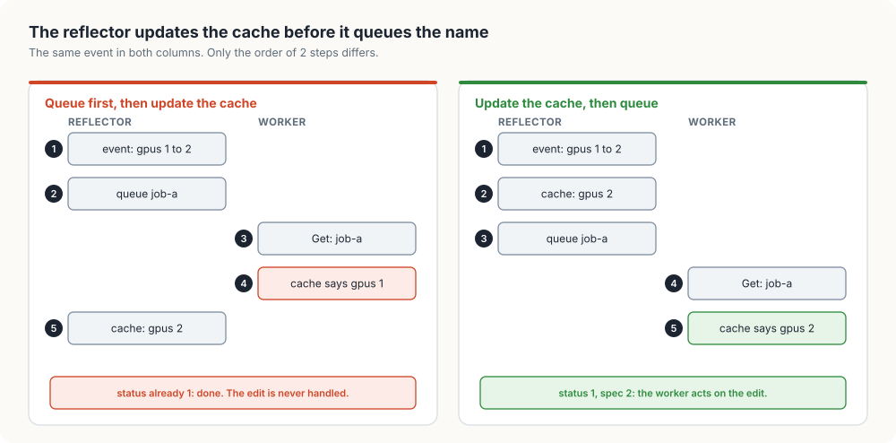
Invariant 1.2 (Cache before queue). When a worker takes a name from the queue, the cache already reflects every event that caused the name to be queued.
Listing 1.7 is step 2 of Algorithm 1.2. Our model retries an unreachable server every 10 milliseconds. client-go doubles the wait after each failure in a row, up to a cap, so that thousands of clients don’t overload a server that’s trying to recover.
Listing 1.7 Watching from a version, and the 3 endings. Go · Rust
// watchFrom applies events from version onward, reopens the watch after each
// disconnect, and returns when the server reports that the history is gone.
func (r *Reflector) watchFrom(version int) {
for {
w, err := r.server.Watch(version)
if errors.Is(err, ErrGone) {
logf("reflector: watch from version %d: %v", version, err)
return
}
if err != nil {
time.Sleep(10 * time.Millisecond) // client-go backs off exponentially
continue
}
for e := range w {
// Update the cache before queueing the name, so that a worker
// that takes the name reads the object as of this event.
r.cache.Apply(e)
r.queue.Add(e.Object.Name)
version = e.Object.ResourceVersion
}
logf("reflector: watch closed, resuming from version %d", version)
}
}
impl Reflector {
/// Applies events from `version` onward, reopens the watch after each
/// disconnect, and returns when the server reports that the history is gone.
fn watch_from(&self, mut version: u64) {
loop {
let events = match self.server.watch(version) {
Ok(events) => events,
Err(ApiError::Gone) => {
log!(
"reflector: watch from version {version}: {}",
ApiError::Gone
);
return;
}
Err(_) => {
thread::sleep(Duration::from_millis(10)); // client-go backs off exponentially
continue;
}
};
for event in events {
version = event.object.resource_version;
let name = event.object.name.clone();
// Update the cache before queueing the name, so that a worker
// that takes the name reads the object as of this event.
self.cache.apply(event);
self.queue.add([name]);
}
log!("reflector: watch closed, resuming from version {version}");
}
}
}A burst of edits starts work that’s already out of date
The reflector knows when an object changes, and the controller needs to hear about it. The direct way is to call the controller once for every event. That goes wrong in 2 ways. A user who edits a job 5 times in 1 second produces 5 events, and a controller called 5 times starts work for 4 specs that are out of date before the work finishes. And after a relist, Replace reports which names changed, but the events that led there no longer exist.
So the controller is handed only the names of objects that changed, through a work queue, and it reads each object’s current state from the cache when it gets to the name. 5 edits put the same name in the queue 5 times, and if the queue ignores a name it already holds, they collapse into 1 piece of work on the latest spec. The controller takes names in 1 or more workers, each handling 1 name at a time.
A queue that only dropped duplicates would still let 2 workers handle the same object at once: an
edit that arrives while worker 1 is busy with job-a would make the name ready again, and worker 2
would take it. With status writes, one of them fails with a conflict and its work is wasted. With
actions outside Kubernetes, such as starting a container, both succeed, and the job ends up with 2
containers. The client-go work queue avoids this with 2 sets beside the list of ready names. The
dirty set holds every name that needs handling. The processing set holds every name a
worker has taken and not yet returned. Figure 1.8 follows 1 name through the calls.
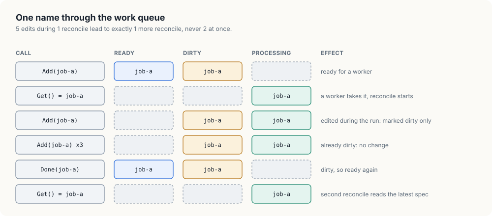
Invariant 1.3 (One worker per name). A name is in processing for at most 1 worker, and it appears in the ready list at most once.
Add puts a name in dirty, and in the ready list only if no worker holds it. That’s the third
row of Figure 1.8: the name is marked and left out of the ready list.
// Add marks each name as needing processing. A name that is already pending
// is left where it is. A name that a worker holds is queued again by Done.
func (q *WorkQueue) Add(names ...string) {
q.mu.Lock()
defer q.mu.Unlock()
for _, name := range names {
if q.dirty[name] {
continue
}
q.dirty[name] = true
if !q.processing[name] {
q.queue = append(q.queue, name)
q.cond.Signal()
}
}
}
impl WorkQueue {
/// Marks each name as needing processing. A name that is already pending
/// is left where it is. A name that a worker holds is queued again by `done`.
pub fn add(&self, names: impl IntoIterator<Item = String>) {
let mut state = self.state();
for name in names {
if !state.dirty.insert(name.clone()) {
continue;
}
if !state.processing.contains(&name) {
state.ready.push_back(name);
self.ready.notify_one();
}
}
}
}Get moves a name from dirty to processing, and Done takes it out of processing and makes it
ready again if it was marked dirty in the meantime. A worker that calls Get on an empty queue has
to sleep without holding the lock, or Add could never get in to add a name. Both versions use a
condition variable (sync.Cond in Go, std::sync::Condvar in Rust), whose wait releases the
lock and sleeps in 1 step. The wait sits in a loop that looks at the list again after waking up,
because another worker may have taken the name first.
Listing 1.9 Get and Done. Go · Rust
// Get blocks until a name is ready and hands it to the caller.
func (q *WorkQueue) Get() string {
q.mu.Lock()
defer q.mu.Unlock()
for len(q.queue) == 0 {
q.cond.Wait()
}
name := q.queue[0]
q.queue = q.queue[1:]
delete(q.dirty, name)
q.processing[name] = true
return name
}
// Done releases a name that Get handed out, and queues it again if it was
// added while the worker held it.
func (q *WorkQueue) Done(name string) {
q.mu.Lock()
defer q.mu.Unlock()
delete(q.processing, name)
if q.dirty[name] {
q.queue = append(q.queue, name)
q.cond.Signal()
}
}
impl WorkQueue {
/// Blocks until a name is ready and hands it to the caller.
pub fn get(&self) -> String {
let mut state = self.state();
loop {
if let Some(name) = state.ready.pop_front() {
state.dirty.remove(&name);
state.processing.insert(name.clone());
return name;
}
state = self.ready.wait(state).expect("queue lock poisoned");
}
}
/// Releases a name that `get` handed out, and queues it again if it was
/// added while the worker held it.
pub fn done(&self, name: &str) {
let mut state = self.state();
state.processing.remove(name);
if state.dirty.contains(name) {
state.ready.push_back(name.to_string());
self.ready.notify_one();
}
}
}Animation 1.1 plays the same calls with the burst of 5 edits from the run at the end of this chapter. Its last part removes the processing set and shows a second worker taking the name while the first is still busy.
Events that never arrive
The function a worker runs for each name is called reconcile: it reads the object’s current spec, compares it with the world, acts to remove the difference, and records the result in the status. It doesn’t know, or care, why it was called. A name queued once and a name queued 10 times lead to the same action, and so do a change reported by an event and a change found by a relist.
Engineers call this style level-triggered, after circuits that respond to the present level of a signal. An edge-triggered circuit responds to each change of the signal instead, and a controller built that way does 1 action per event. Figure 1.9 runs both against the same burst of 5 edits. The edge-triggered controller acts 5 times, and 4 of those actions are for specs that were already replaced. The level-triggered controller acts twice, each time on what the cache holds. If an event is lost to a compaction, the edge-triggered controller never acts on it, and the level-triggered one finds the change on its next read.
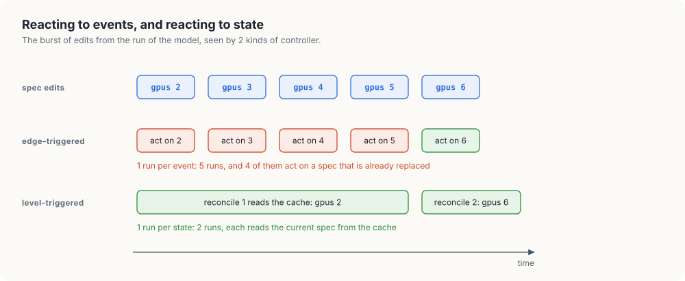
Figure 1.10 lays out 1 reconcile as a decision flow. There’s one more trap in it, at marker ➎. Our
cache trails the server by the time an event takes to arrive, and the work at ➍ takes time too. If
the user changes the spec meanwhile and we write our copy of the object back unconditionally, we
store the old spec along with a status computed for it, and the user’s edit disappears. So
reconcile writes the status with the version it read, exactly as client B did in Figure 1.2. If the
object has changed, the write fails with 409 Conflict, the name goes back in the queue, and the
next run reads the newer object.
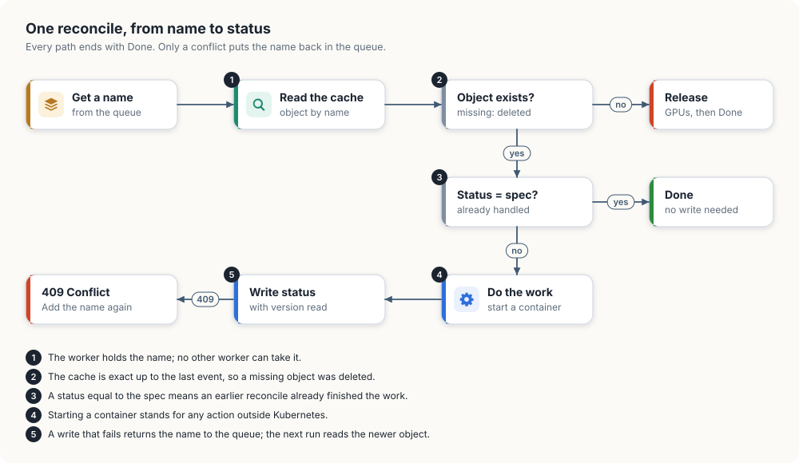
In our model, a 20-millisecond sleep stands in for the work at marker ➍. A missing object at ➋ was deleted, and a real controller would release what it had set up for it; our model logs a message.
Listing 1.10 Reconciling 1 name. Go · Rust
// reconcile reads the named object from the cache and, if its status differs
// from its spec, writes a new status conditioned on the version it read.
func (c *Controller) reconcile(name string) error {
o, ok := c.cache.Get(name)
if !ok {
logf("reconcile %s: deleted, releasing its GPUs", name)
return nil
}
if o.Status.GPUs == o.Spec.GPUs {
return nil
}
time.Sleep(20 * time.Millisecond) // slow work, such as starting containers
o.Status.GPUs = o.Spec.GPUs
if err := c.server.Update(o); err != nil {
logf("reconcile %s: write at version %d: %v", name, o.ResourceVersion, err)
return err
}
logf("reconcile %s: status.GPUs = %d", name, o.Status.GPUs)
return nil
}
impl Controller {
/// Reads the named object from the cache and, if its status differs from
/// its spec, writes a new status conditioned on the version it read.
fn reconcile(&self, name: &str) -> Result<(), ApiError> {
let Some(mut object) = self.cache.get(name) else {
log!("reconcile {name}: deleted, releasing its GPUs");
return Ok(());
};
if object.status.gpus == object.spec.gpus {
return Ok(());
}
thread::sleep(Duration::from_millis(20)); // slow work, such as starting containers
object.status.gpus = object.spec.gpus;
let version = object.resource_version;
match self.server.update(object.clone()) {
Ok(()) => {
log!("reconcile {name}: status.gpus = {}", object.status.gpus);
Ok(())
}
Err(error) => {
log!("reconcile {name}: write at version {version}: {error}");
Err(error)
}
}
}
}Running the model
Figure 1.11 puts the pieces together: the API server numbers every write, the reflector applies each event to the cache and then queues the name, and a worker takes the name, reads the cache, and writes the status back with the version it read.
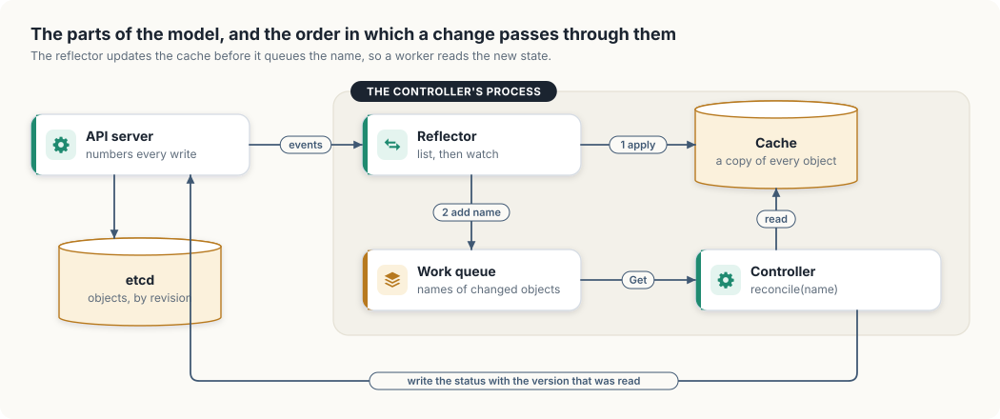
The demonstration creates 2 jobs, starts the reflector and 1 worker, and then causes each problem
from this chapter in turn: a burst of 5 edits during a reconcile, a dropped watch, and a partition
during which a job is deleted and the history is compacted. Go runs the reflector and the worker as
goroutines; Rust runs them on threads that share the server, cache and queue through Arc. Both
log to standard error with the milliseconds since the start. The Go version prints:
$ go run ./informer
0ms reflector: list at version 2: [job-a{spec.GPUs: 1, status.GPUs: 0, v1} job-b{spec.GPUs: 8, status.GPUs: 0, v2}]
20ms reconcile job-a: status.GPUs = 1
40ms reconcile job-b: status.GPUs = 8
101ms --- job-a is edited five times in a burst
121ms reconcile job-a: write at version 5: 409 Conflict: object has been modified
141ms reconcile job-a: status.GPUs = 6
257ms --- the watch connection drops
257ms reflector: watch closed, resuming from version 10
307ms --- partition: job-b is deleted and the history compacted meanwhile
307ms reflector: watch closed, resuming from version 10
338ms reflector: watch from version 10: 410 Gone: resource version too old
338ms reflector: list at version 11: [job-a{spec.GPUs: 6, status.GPUs: 6, v10}]
338ms reconcile job-b: deleted, releasing its GPUs
489ms final state at version 11: [job-a{spec.GPUs: 6, status.GPUs: 6, v10}]
The Rust version prints the same sequence, with timings that differ by a millisecond or 2 and field names in Rust’s style:
$ cargo run -p informer
0ms reflector: list at version 2: [job-a{spec.gpus: 1, status.gpus: 0, v1} job-b{spec.gpus: 8, status.gpus: 0, v2}]
20ms reconcile job-a: status.gpus = 1
40ms reconcile job-b: status.gpus = 8
100ms --- job-a is edited five times in a burst
120ms reconcile job-a: write at version 5: 409 Conflict: object has been modified
141ms reconcile job-a: status.gpus = 6
255ms --- the watch connection drops
256ms reflector: watch closed, resuming from version 10
306ms --- partition: job-b is deleted and the history compacted meanwhile
306ms reflector: watch closed, resuming from version 10
336ms reflector: watch from version 10: 410 Gone: resource version too old
337ms reflector: list at version 11: [job-a{spec.gpus: 6, status.gpus: 6, v10}]
337ms reconcile job-b: deleted, releasing its GPUs
486ms final state at version 11: [job-a{spec.gpus: 6, status.gpus: 6, v10}]
Here’s the Go log read line by line against the sections of this chapter.
| Time | Log | What happened |
|---|---|---|
| 0 ms | list at version 2 | The reflector lists (Algorithm 1.2, step 1.1). Replace reports both jobs, and both names are queued. |
| 20 to 40 ms | 1 reconcile per job | Each status write is itself an event and queues the name again. The next run finds status equal to spec and returns without a log line. |
| 101 ms | 5 edits | The worker took job-a after the first edit and read a spec of 2 at version 5. The other 4 edits arrived while it held the name, so the queue only marked it dirty (Figure 1.8). |
| 121 ms | 409 Conflict at version 5 | The object was at version 9 by then, so the conditional write failed and the name went back in the queue. |
| 141 ms | status 6 | The second run read version 9 and wrote status 6 at version 10. Specs 3, 4 and 5 were never acted on (Figure 1.9). |
| 257 ms | watch closed, resuming from 10 | The stream closed. The cache was exact up to 10, so the reflector watched again from 10 with no list. |
| 307 to 338 ms | 410 Gone, list at version 11 | During the partition, job-b was deleted at 11 and history was compacted to 11, so a watch from 10 couldn’t be served. |
| 338 ms | job-b: deleted | Replace found job-b in the old cache and missing from the list (Figure 1.6). Its DELETED event no longer existed anywhere. |
Animation 1.2 replays the run from the list at version 2 to the list at version 11, with the server’s objects on the left and the cache on the right.
410 Gone and a second list.What client-go adds
Real Go controllers use client-go, directly or through controller-runtime, which is built on it. Every part of our model has a counterpart there.
| Our model | client-go |
|---|---|
APIServer.List, Watch | ListerWatcher, backed by HTTP list and watch requests |
Reflector | cache.Reflector |
Cache | cache.Indexer, a thread-safe store with secondary indexes, such as all pods on 1 node |
| reflector and cache together | cache.SharedIndexInformer, usually just called an informer |
WorkQueue | workqueue, with the same dirty and processing sets |
reconcile | a controller’s Reconcile method |
client-go also has a few mechanisms our model leaves out, and each one fixes a problem we can now recognise.
Shared informers. If 3 controllers in 1 process all care about pods, they share 1 pod watch
and 1 cache through a SharedInformerFactory, and each keeps its own handler and work queue, as
Figure 1.12 shows. The API server then serves 1 watch per process instead of 1 per controller.
Because every controller reads the same objects, client-go hands out pointers into the shared
store, so a controller that wants to change an object must call its generated DeepCopy method and
change the copy. Otherwise it changes what every other controller in the process sees.
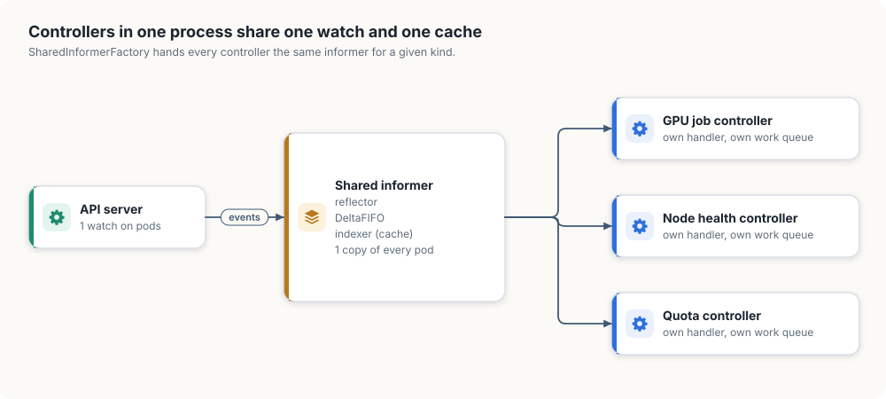
DeltaFIFO. Between the reflector and the cache, client-go keeps a queue of pending changes per
object, so the code that updates the cache and notifies handlers takes 1 object at a time with all
its changes. When a relist shows that an object has disappeared, the deletion it reports is wrapped
in DeletedFinalStateUnknown, which warns handlers that the object they get is the last state the
cache saw, possibly older than the state at deletion.
Rate-limited retries. Our model retries a failed name at once. client-go’s default rate limiter waits 5 ms after the first failure of a name and doubles the wait after each further failure, up to 1,000 s, and on top of that allows at most 10 retries per second with bursts of 100 across all names. Without such a limit, a controller with a bug that makes every write fail would send the API server a request for every attempt, as fast as it could.
Resync. An informer can be told to queue every name in its cache again every so often, from memory and without asking the server. This helps controllers that manage something outside Kubernetes, such as a cloud load balancer, whose drift no Kubernetes event will ever report.
Smaller caches. A cache holds every object of its kind, so 50,000 pods at 4 KB each is 200 MB in every process that watches pods. Controllers that need only names and labels use a metadata-only informer, and any informer can be given a transform function that drops unneeded fields before an object enters the cache.
Reading your own writes. A controller’s own writes reach its cache the same way everyone
else’s do, as events. Until the event arrives, the cache shows the state before the write. If a
reconcile creates a pod for a job and a second event for the job arrives before the pod’s creation
event, the next reconcile finds no pod and creates another one. The ReplicaSet controller guards
against this with expectations: after creating 3 pods it waits to see 3 creation events, or a
timeout, before it looks at that ReplicaSet again. A second guard uses 2 numbers every object
carries. The API server increments metadata.generation whenever the spec changes, and the
controller copies the generation it acted on into status.observedGeneration. When the 2 differ,
anyone can see that the latest spec hasn’t been handled yet.
An informer isn’t always the right tool. A cache is always a little behind, so a decision that must see the very latest state, such as granting the last free GPU of a quota, needs a direct read or a conditional write at the moment of decision. And a controller that cares about a handful of objects among millions pays for a cache of all of them unless it narrows its watch with a label or field selector.
Summary
- The API server numbers every write with etcd’s revision, and an object’s resource version is the revision of its latest write.
- A write that carries the version it read is refused with
409 Conflictif the object has moved on, so 2 writers can’t silently undo each other. - A client lists, then watches from the list’s version, and gets every change exactly once (Invariant 1.1).
- A watch resumes from the last version applied after a closed stream or an outage, and lists again only after
410 Gone. - Replace finds deletions whose events were compacted away by comparing the old cache with the new list.
- The reflector updates the cache before it queues a name (Invariant 1.2).
- The work queue’s dirty and processing sets merge bursts of edits and keep 1 name with 1 worker (Invariant 1.3).
- A level-triggered reconcile acts on the current state, so lost or repeated events cost it nothing.
The next part of this chapter, A GPU job controller on a real cluster, runs the same design against a real cluster, with client-go in Go and kube-rs in Rust.
Exercises
- In Figure 1.1, a client lists at revision 8 and watches from 8. Which revisions does it receive as events, and what’s its cached resource version for
job-bafterwards? - In Figure 1.3, a client calls
Watch(from 1). What does the server answer, and what must the client do next? - Swap the 2 steps of Algorithm 1.2, step 2.3, in the Go model, and add a 30-millisecond sleep between them. Run the demonstration and find the edit that’s never reconciled.
- Remove the processing set from the work queue and run the demonstration with 2 workers. How many reconciles of
job-aoverlap during the burst? - With client-go’s default rate limiter, after how many consecutive failures does 1 name wait longer than 1 minute between attempts?
- A relist finds an object with the same name, a different resource version and a different UID. What happened on the server, and what should a controller that owns a container for that object do?
The complete program
The model is 6 source files in each language. Each is folded here, with Go and Rust as tabs.
The API server: server.go and server.rs
Listing 1.11 The API server, complete. Go · Rust
// server.go models the Kubernetes API server. It stores objects, numbers every
// write, keeps a history of recent changes, and serves lists and watches.
package main
import (
"errors"
"fmt"
"maps"
"slices"
"strings"
"sync"
)
// Spec is the part of an object that a user writes: the desired state.
type Spec struct {
// GPUs is the number of GPUs the job asks for.
GPUs int
}
// Status is the part of an object that the controller writes: the observed state.
type Status struct {
// GPUs is the number of GPUs the controller has provided to the job.
GPUs int
}
// Object is one stored record, such as a training job.
type Object struct {
// Name identifies the object on the server.
Name string
// Spec holds what the user asked for.
Spec Spec
// Status holds what the controller has done about it.
Status Status
// ResourceVersion is the server's write counter at the object's latest change.
ResourceVersion int
}
// String formats an object for the demonstration's log lines.
func (o Object) String() string {
return fmt.Sprintf("%s{spec.GPUs: %d, status.GPUs: %d, v%d}",
o.Name, o.Spec.GPUs, o.Status.GPUs, o.ResourceVersion)
}
// EventType is the kind of change that an Event records.
type EventType int
// The kinds of change that a watch reports.
const (
Added EventType = iota // the object was created
Modified // the object was updated
Deleted // the object was removed
)
// String returns the name that the Kubernetes watch protocol uses for t.
func (t EventType) String() string {
return [...]string{"ADDED", "MODIFIED", "DELETED"}[t]
}
// Event records one change to one object.
type Event struct {
// Type is the kind of change.
Type EventType
// Object is the object after the change, or its final state if it was deleted.
Object Object
}
// Errors that the server returns. The first two carry the HTTP status codes
// that the Kubernetes API server uses for the same conditions.
var (
// ErrGone reports that the history a watch needs has been discarded.
ErrGone = errors.New("410 Gone: resource version too old")
// ErrConflict reports a conditional write whose resource version is out of date.
ErrConflict = errors.New("409 Conflict: object has been modified")
// ErrUnreachable reports that the client cannot reach the server.
ErrUnreachable = errors.New("server unreachable")
)
// APIServer stores objects and streams their changes to watchers. Its methods
// are safe for concurrent use.
type APIServer struct {
// mu guards every field below.
mu sync.Mutex
// version is the last resource version the server handed out.
version int
// objects holds the current state of every object, keyed by name.
objects map[string]Object
// history holds the events newer than compacted, oldest first.
history []Event
// compacted is the oldest version from which a watch may resume.
compacted int
// watches holds one channel for each open watch.
watches []chan Event
// unreachable makes new watches fail, to simulate a network partition.
unreachable bool
}
// NewAPIServer returns an empty server.
func NewAPIServer() *APIServer {
return &APIServer{objects: map[string]Object{}}
}
// Update creates or replaces an object and returns ErrConflict if the write's
// condition fails. A non-zero o.ResourceVersion is a condition: the caller read
// the object at that version and wants the write applied only if the object is
// still at it. A zero ResourceVersion writes unconditionally.
func (s *APIServer) Update(o Object) error {
s.mu.Lock()
defer s.mu.Unlock()
current, exists := s.objects[o.Name]
if o.ResourceVersion != 0 && o.ResourceVersion != current.ResourceVersion {
return ErrConflict
}
eventType := Modified
if !exists {
eventType = Added
}
s.version++
o.ResourceVersion = s.version
s.objects[o.Name] = o
s.publish(Event{eventType, o})
return nil
}
// Delete removes the named object, if it exists.
func (s *APIServer) Delete(name string) {
s.mu.Lock()
defer s.mu.Unlock()
o, exists := s.objects[name]
if !exists {
return
}
delete(s.objects, name)
s.version++
o.ResourceVersion = s.version
s.publish(Event{Deleted, o})
}
// publish appends e to the history and sends it to every open watch.
// The caller must hold s.mu.
func (s *APIServer) publish(e Event) {
s.history = append(s.history, e)
for _, w := range s.watches {
w <- e
}
}
// List returns every object, sorted by name, and the version at which the
// snapshot was taken.
func (s *APIServer) List() ([]Object, int) {
s.mu.Lock()
defer s.mu.Unlock()
byName := func(a, b Object) int { return strings.Compare(a.Name, b.Name) }
return slices.SortedFunc(maps.Values(s.objects), byName), s.version
}
// Watch returns a channel that first delivers the stored events newer than
// version and then every new event, until the server closes it.
func (s *APIServer) Watch(version int) (<-chan Event, error) {
s.mu.Lock()
defer s.mu.Unlock()
switch {
case s.unreachable:
return nil, ErrUnreachable
case version < s.compacted:
return nil, ErrGone
}
w := make(chan Event, 1024)
for _, e := range s.history {
if e.Object.ResourceVersion > version {
w <- e
}
}
s.watches = append(s.watches, w)
return w, nil
}
// Compact discards the event history, as etcd discards old versions.
func (s *APIServer) Compact() {
s.mu.Lock()
defer s.mu.Unlock()
s.compacted = s.version
s.history = nil
}
// DropWatches closes every open watch, as a load balancer's idle timeout would.
func (s *APIServer) DropWatches() {
s.mu.Lock()
defer s.mu.Unlock()
s.dropWatches()
}
// Partition closes every open watch and makes new watches fail until Heal.
func (s *APIServer) Partition() {
s.mu.Lock()
defer s.mu.Unlock()
s.unreachable = true
s.dropWatches()
}
// Heal ends a partition, so new watches succeed again.
func (s *APIServer) Heal() {
s.mu.Lock()
defer s.mu.Unlock()
s.unreachable = false
}
// dropWatches closes and forgets every watch channel. The caller must hold s.mu.
func (s *APIServer) dropWatches() {
for _, w := range s.watches {
close(w)
}
s.watches = nil
}
//! A model of the Kubernetes API server. It stores objects, numbers every
//! write, keeps a history of recent changes, and serves lists and watches.
use std::collections::HashMap;
use std::fmt;
use std::sync::Mutex;
use std::sync::mpsc::{Receiver, Sender, channel};
/// The part of an object that a user writes: the desired state.
#[derive(Clone, Copy, Debug, Default, PartialEq, Eq)]
pub struct Spec {
/// Number of GPUs the job asks for.
pub gpus: u32,
}
/// The part of an object that the controller writes: the observed state.
#[derive(Clone, Copy, Debug, Default, PartialEq, Eq)]
pub struct Status {
/// Number of GPUs the controller has provided to the job.
pub gpus: u32,
}
/// One stored record, such as a training job.
#[derive(Clone, Debug, Default, PartialEq, Eq)]
pub struct Object {
/// Identifies the object on the server.
pub name: String,
/// What the user asked for.
pub spec: Spec,
/// What the controller has done about it.
pub status: Status,
/// The server's write counter at the object's latest change.
pub resource_version: u64,
}
impl Object {
/// Returns a new object with the given name and GPU request, an empty
/// status, and no resource version.
pub fn new(name: &str, gpus: u32) -> Self {
Self {
name: name.to_string(),
spec: Spec { gpus },
..Self::default()
}
}
}
impl fmt::Display for Object {
/// Formats an object for the demonstration's log lines.
fn fmt(&self, f: &mut fmt::Formatter<'_>) -> fmt::Result {
write!(
f,
"{}{{spec.gpus: {}, status.gpus: {}, v{}}}",
self.name, self.spec.gpus, self.status.gpus, self.resource_version
)
}
}
/// The kind of change that an [`Event`] records.
#[derive(Clone, Copy, Debug, PartialEq, Eq)]
pub enum EventType {
/// The object was created.
Added,
/// The object was updated.
Modified,
/// The object was removed.
Deleted,
}
/// One change to one object.
#[derive(Clone, Debug)]
pub struct Event {
/// The kind of change.
pub kind: EventType,
/// The object after the change, or its final state if it was deleted.
pub object: Object,
}
/// Errors that the server returns. The first two carry the HTTP status codes
/// that the Kubernetes API server uses for the same conditions.
#[derive(Clone, Copy, Debug, PartialEq, Eq)]
pub enum ApiError {
/// The history that a watch needs has been discarded.
Gone,
/// A conditional write carried an out-of-date resource version.
Conflict,
/// The client cannot reach the server.
Unreachable,
}
impl fmt::Display for ApiError {
/// Formats the error the way the Kubernetes API server reports it.
fn fmt(&self, f: &mut fmt::Formatter<'_>) -> fmt::Result {
f.write_str(match self {
Self::Gone => "410 Gone: resource version too old",
Self::Conflict => "409 Conflict: object has been modified",
Self::Unreachable => "server unreachable",
})
}
}
/// Everything the server stores, kept behind one lock.
#[derive(Default)]
struct State {
/// The last resource version the server handed out.
version: u64,
/// The current state of every object, keyed by name.
objects: HashMap<String, Object>,
/// The events newer than `compacted`, oldest first.
history: Vec<Event>,
/// The oldest version from which a watch may resume.
compacted: u64,
/// One sender for each open watch.
watches: Vec<Sender<Event>>,
/// Makes new watches fail, to simulate a network partition.
unreachable: bool,
}
impl State {
/// Appends `event` to the history and sends it to every open watch.
/// Watches whose receiver has gone away are forgotten.
fn publish(&mut self, event: Event) {
self.watches.retain(|w| w.send(event.clone()).is_ok());
self.history.push(event);
}
}
/// Stores objects and streams their changes to watchers. Its methods are safe
/// to call from several threads.
#[derive(Default)]
pub struct ApiServer {
/// Guards all of the server's data.
state: Mutex<State>,
}
impl ApiServer {
/// Locks the server's data.
fn state(&self) -> std::sync::MutexGuard<'_, State> {
self.state.lock().expect("server lock poisoned")
}
}
impl ApiServer {
/// Creates or replaces an object. A non-zero `resource_version` is a
/// condition: the caller read the object at that version and wants the
/// write applied only if the object is still at it. Zero writes
/// unconditionally.
pub fn update(&self, mut object: Object) -> Result<(), ApiError> {
let mut state = self.state();
let current = state.objects.get(&object.name);
let current_version = current.map_or(0, |o| o.resource_version);
if object.resource_version != 0 && object.resource_version != current_version {
return Err(ApiError::Conflict);
}
let kind = if current.is_some() {
EventType::Modified
} else {
EventType::Added
};
state.version += 1;
object.resource_version = state.version;
state.objects.insert(object.name.clone(), object.clone());
state.publish(Event { kind, object });
Ok(())
}
}
impl ApiServer {
/// Removes the named object, if it exists.
pub fn delete(&self, name: &str) {
let mut state = self.state();
let Some(mut object) = state.objects.remove(name) else {
return;
};
state.version += 1;
object.resource_version = state.version;
state.publish(Event {
kind: EventType::Deleted,
object,
});
}
}
impl ApiServer {
/// Returns every object, sorted by name, and the version at which the
/// snapshot was taken.
pub fn list(&self) -> (Vec<Object>, u64) {
let state = self.state();
let mut objects: Vec<Object> = state.objects.values().cloned().collect();
objects.sort_by(|a, b| a.name.cmp(&b.name));
(objects, state.version)
}
/// Returns a receiver that first delivers the stored events newer than
/// `version` and then every new event, until the server drops the watch.
pub fn watch(&self, version: u64) -> Result<Receiver<Event>, ApiError> {
let mut state = self.state();
if state.unreachable {
return Err(ApiError::Unreachable);
}
if version < state.compacted {
return Err(ApiError::Gone);
}
let (sender, receiver) = channel();
for event in &state.history {
if event.object.resource_version > version {
sender.send(event.clone()).expect("receiver is held here");
}
}
state.watches.push(sender);
Ok(receiver)
}
}
impl ApiServer {
/// Discards the event history, as etcd discards old versions.
pub fn compact(&self) {
let mut state = self.state();
state.compacted = state.version;
state.history.clear();
}
/// Closes every open watch, as a load balancer's idle timeout would.
pub fn drop_watches(&self) {
self.state().watches.clear();
}
/// Closes every open watch and makes new watches fail until [`Self::heal`].
pub fn partition(&self) {
let mut state = self.state();
state.unreachable = true;
state.watches.clear();
}
/// Ends a partition, so new watches succeed again.
pub fn heal(&self) {
self.state().unreachable = false;
}
}The cache: cache.go and cache.rs
Listing 1.12 The cache, complete. Go · Rust
// cache.go holds the client's local copy of the server's objects.
package main
import "sync"
// Cache is the client's copy of the server's objects, kept current by a
// Reflector. Its methods are safe for concurrent use.
type Cache struct {
// mu guards objects.
mu sync.RWMutex
// objects holds the latest known state of every object, keyed by name.
objects map[string]Object
}
// NewCache returns an empty cache.
func NewCache() *Cache {
return &Cache{objects: map[string]Object{}}
}
// Get returns the cached copy of the named object and whether it exists.
func (c *Cache) Get(name string) (Object, bool) {
c.mu.RLock()
defer c.mu.RUnlock()
o, ok := c.objects[name]
return o, ok
}
// Apply records one event from a watch.
func (c *Cache) Apply(e Event) {
c.mu.Lock()
defer c.mu.Unlock()
if e.Type == Deleted {
delete(c.objects, e.Object.Name)
return
}
c.objects[e.Object.Name] = e.Object
}
// Replace installs the result of a fresh list and returns the names of the
// objects that changed, including objects that disappeared while the client
// was not watching.
func (c *Cache) Replace(list []Object) []string {
c.mu.Lock()
defer c.mu.Unlock()
old := c.objects
c.objects = make(map[string]Object, len(list))
var changed []string
for _, o := range list {
c.objects[o.Name] = o
// A name missing from old reads as version 0, so it counts as changed.
if old[o.Name].ResourceVersion != o.ResourceVersion {
changed = append(changed, o.Name)
}
}
for name := range old {
if _, ok := c.objects[name]; !ok {
changed = append(changed, name)
}
}
return changed
}
//! The client's local copy of the server's objects.
use crate::server::{Event, EventType, Object};
use std::collections::HashMap;
use std::sync::RwLock;
/// The client's copy of the server's objects, kept current by a
/// [`Reflector`](crate::reflector::Reflector). Its methods are safe to call
/// from several threads.
#[derive(Default)]
pub struct Cache {
/// The latest known state of every object, keyed by name.
objects: RwLock<HashMap<String, Object>>,
}
impl Cache {
/// Returns the cached copy of the named object, if it exists.
pub fn get(&self, name: &str) -> Option<Object> {
let objects = self.objects.read().expect("cache lock poisoned");
objects.get(name).cloned()
}
/// Records one event from a watch.
pub fn apply(&self, event: Event) {
let mut objects = self.objects.write().expect("cache lock poisoned");
match event.kind {
EventType::Deleted => objects.remove(&event.object.name),
EventType::Added | EventType::Modified => {
objects.insert(event.object.name.clone(), event.object)
}
};
}
}
impl Cache {
/// Installs the result of a fresh list and returns the names of the
/// objects that changed, including objects that disappeared while the
/// client was not watching.
pub fn replace(&self, list: &[Object]) -> Vec<String> {
let mut objects = self.objects.write().expect("cache lock poisoned");
let old = std::mem::take(&mut *objects);
let mut changed = Vec::new();
for object in list {
let old_version = old.get(&object.name).map(|o| o.resource_version);
if old_version != Some(object.resource_version) {
changed.push(object.name.clone());
}
objects.insert(object.name.clone(), object.clone());
}
for name in old.keys() {
if !objects.contains_key(name) {
changed.push(name.clone());
}
}
changed
}
}The reflector: reflector.go and reflector.rs
Listing 1.13 The reflector, complete. Go · Rust
// reflector.go keeps a Cache current by listing and watching the server.
package main
import (
"errors"
"time"
)
// Reflector copies the server's objects into a cache and queues the name of
// every object that changes.
type Reflector struct {
// server is the source of objects and events.
server *APIServer
// cache receives every object the reflector sees.
cache *Cache
// queue receives the name of every object that changes.
queue *WorkQueue
}
// Run lists every object, watches from the list's version, and lists again
// whenever the server can no longer resume the watch. It does not return.
func (r *Reflector) Run() {
for {
list, version := r.server.List()
r.queue.Add(r.cache.Replace(list)...)
logf("reflector: list at version %d: %v", version, list)
r.watchFrom(version)
}
}
// watchFrom applies events from version onward, reopens the watch after each
// disconnect, and returns when the server reports that the history is gone.
func (r *Reflector) watchFrom(version int) {
for {
w, err := r.server.Watch(version)
if errors.Is(err, ErrGone) {
logf("reflector: watch from version %d: %v", version, err)
return
}
if err != nil {
time.Sleep(10 * time.Millisecond) // client-go backs off exponentially
continue
}
for e := range w {
// Update the cache before queueing the name, so that a worker
// that takes the name reads the object as of this event.
r.cache.Apply(e)
r.queue.Add(e.Object.Name)
version = e.Object.ResourceVersion
}
logf("reflector: watch closed, resuming from version %d", version)
}
}
//! Keeps a [`Cache`] current by listing and watching the server.
use crate::cache::Cache;
use crate::log;
use crate::queue::WorkQueue;
use crate::server::{ApiError, ApiServer};
use std::sync::Arc;
use std::thread;
use std::time::Duration;
/// Copies the server's objects into a cache and queues the name of every
/// object that changes.
pub struct Reflector {
/// The source of objects and events.
pub server: Arc<ApiServer>,
/// Receives every object the reflector sees.
pub cache: Arc<Cache>,
/// Receives the name of every object that changes.
pub queue: Arc<WorkQueue>,
}
impl Reflector {
/// Lists every object, watches from the list's version, and lists again
/// whenever the server can no longer resume the watch. It does not return.
pub fn run(&self) {
loop {
let (list, version) = self.server.list();
self.queue.add(self.cache.replace(&list));
let objects: Vec<String> = list.iter().map(ToString::to_string).collect();
log!(
"reflector: list at version {version}: [{}]",
objects.join(" ")
);
self.watch_from(version);
}
}
}
impl Reflector {
/// Applies events from `version` onward, reopens the watch after each
/// disconnect, and returns when the server reports that the history is gone.
fn watch_from(&self, mut version: u64) {
loop {
let events = match self.server.watch(version) {
Ok(events) => events,
Err(ApiError::Gone) => {
log!(
"reflector: watch from version {version}: {}",
ApiError::Gone
);
return;
}
Err(_) => {
thread::sleep(Duration::from_millis(10)); // client-go backs off exponentially
continue;
}
};
for event in events {
version = event.object.resource_version;
let name = event.object.name.clone();
// Update the cache before queueing the name, so that a worker
// that takes the name reads the object as of this event.
self.cache.apply(event);
self.queue.add([name]);
}
log!("reflector: watch closed, resuming from version {version}");
}
}
}The work queue: queue.go and queue.rs
Listing 1.14 The work queue, complete. Go · Rust
// queue.go implements the work queue between the reflector and the controller.
package main
import "sync"
// WorkQueue stores the names of objects that need reconciling. A name waits
// in the queue at most once, and a name that a worker holds is handed to no
// other worker until the first calls Done.
type WorkQueue struct {
// mu guards every field below.
mu sync.Mutex
// cond wakes workers blocked in Get.
cond *sync.Cond
// queue holds the names ready for a worker, in arrival order.
queue []string
// dirty holds every name that needs processing.
dirty map[string]bool
// processing holds every name that a worker currently holds.
processing map[string]bool
}
// NewWorkQueue returns an empty queue.
func NewWorkQueue() *WorkQueue {
q := &WorkQueue{dirty: map[string]bool{}, processing: map[string]bool{}}
q.cond = sync.NewCond(&q.mu)
return q
}
// Add marks each name as needing processing. A name that is already pending
// is left where it is. A name that a worker holds is queued again by Done.
func (q *WorkQueue) Add(names ...string) {
q.mu.Lock()
defer q.mu.Unlock()
for _, name := range names {
if q.dirty[name] {
continue
}
q.dirty[name] = true
if !q.processing[name] {
q.queue = append(q.queue, name)
q.cond.Signal()
}
}
}
// Get blocks until a name is ready and hands it to the caller.
func (q *WorkQueue) Get() string {
q.mu.Lock()
defer q.mu.Unlock()
for len(q.queue) == 0 {
q.cond.Wait()
}
name := q.queue[0]
q.queue = q.queue[1:]
delete(q.dirty, name)
q.processing[name] = true
return name
}
// Done releases a name that Get handed out, and queues it again if it was
// added while the worker held it.
func (q *WorkQueue) Done(name string) {
q.mu.Lock()
defer q.mu.Unlock()
delete(q.processing, name)
if q.dirty[name] {
q.queue = append(q.queue, name)
q.cond.Signal()
}
}
//! The work queue between the reflector and the controller.
use std::collections::{HashSet, VecDeque};
use std::sync::{Condvar, Mutex, MutexGuard};
/// The queue's data, kept behind one lock.
#[derive(Default)]
struct State {
/// The names ready for a worker, in arrival order.
ready: VecDeque<String>,
/// Every name that needs processing.
dirty: HashSet<String>,
/// Every name that a worker currently holds.
processing: HashSet<String>,
}
/// Stores the names of objects that need reconciling. A name waits in the
/// queue at most once, and a name that a worker holds is handed to no other
/// worker until the first calls [`WorkQueue::done`].
#[derive(Default)]
pub struct WorkQueue {
/// Guards the queue's data.
state: Mutex<State>,
/// Wakes workers blocked in [`WorkQueue::get`].
ready: Condvar,
}
impl WorkQueue {
/// Locks the queue's data.
fn state(&self) -> MutexGuard<'_, State> {
self.state.lock().expect("queue lock poisoned")
}
}
impl WorkQueue {
/// Marks each name as needing processing. A name that is already pending
/// is left where it is. A name that a worker holds is queued again by `done`.
pub fn add(&self, names: impl IntoIterator<Item = String>) {
let mut state = self.state();
for name in names {
if !state.dirty.insert(name.clone()) {
continue;
}
if !state.processing.contains(&name) {
state.ready.push_back(name);
self.ready.notify_one();
}
}
}
}
impl WorkQueue {
/// Blocks until a name is ready and hands it to the caller.
pub fn get(&self) -> String {
let mut state = self.state();
loop {
if let Some(name) = state.ready.pop_front() {
state.dirty.remove(&name);
state.processing.insert(name.clone());
return name;
}
state = self.ready.wait(state).expect("queue lock poisoned");
}
}
/// Releases a name that `get` handed out, and queues it again if it was
/// added while the worker held it.
pub fn done(&self, name: &str) {
let mut state = self.state();
state.processing.remove(name);
if state.dirty.contains(name) {
state.ready.push_back(name.to_string());
self.ready.notify_one();
}
}
}The controller: controller.go and controller.rs
Listing 1.15 The controller, complete. Go · Rust
// controller.go reconciles objects whose names arrive on the work queue.
package main
import "time"
// Controller makes each object's status agree with its spec.
type Controller struct {
// server receives the controller's status writes.
server *APIServer
// cache supplies the current state of each object.
cache *Cache
// queue supplies the names of objects to reconcile.
queue *WorkQueue
}
// Run is a single worker: it takes names from the queue one at a time and
// reconciles them. It does not return.
func (c *Controller) Run() {
for {
name := c.queue.Get()
err := c.reconcile(name)
c.queue.Done(name)
if err != nil {
c.queue.Add(name) // client-go requeues with a backoff
}
}
}
// reconcile reads the named object from the cache and, if its status differs
// from its spec, writes a new status conditioned on the version it read.
func (c *Controller) reconcile(name string) error {
o, ok := c.cache.Get(name)
if !ok {
logf("reconcile %s: deleted, releasing its GPUs", name)
return nil
}
if o.Status.GPUs == o.Spec.GPUs {
return nil
}
time.Sleep(20 * time.Millisecond) // slow work, such as starting containers
o.Status.GPUs = o.Spec.GPUs
if err := c.server.Update(o); err != nil {
logf("reconcile %s: write at version %d: %v", name, o.ResourceVersion, err)
return err
}
logf("reconcile %s: status.GPUs = %d", name, o.Status.GPUs)
return nil
}
//! Reconciles objects whose names arrive on the work queue.
use crate::cache::Cache;
use crate::log;
use crate::queue::WorkQueue;
use crate::server::{ApiError, ApiServer};
use std::sync::Arc;
use std::thread;
use std::time::Duration;
/// Makes each object's status agree with its spec.
pub struct Controller {
/// Receives the controller's status writes.
pub server: Arc<ApiServer>,
/// Supplies the current state of each object.
pub cache: Arc<Cache>,
/// Supplies the names of objects to reconcile.
pub queue: Arc<WorkQueue>,
}
impl Controller {
/// A single worker: takes names from the queue one at a time and
/// reconciles them. It does not return.
pub fn run(&self) {
loop {
let name = self.queue.get();
let result = self.reconcile(&name);
self.queue.done(&name);
if result.is_err() {
self.queue.add([name]); // client-go requeues with a backoff
}
}
}
}
impl Controller {
/// Reads the named object from the cache and, if its status differs from
/// its spec, writes a new status conditioned on the version it read.
fn reconcile(&self, name: &str) -> Result<(), ApiError> {
let Some(mut object) = self.cache.get(name) else {
log!("reconcile {name}: deleted, releasing its GPUs");
return Ok(());
};
if object.status.gpus == object.spec.gpus {
return Ok(());
}
thread::sleep(Duration::from_millis(20)); // slow work, such as starting containers
object.status.gpus = object.spec.gpus;
let version = object.resource_version;
match self.server.update(object.clone()) {
Ok(()) => {
log!("reconcile {name}: status.gpus = {}", object.status.gpus);
Ok(())
}
Err(error) => {
log!("reconcile {name}: write at version {version}: {error}");
Err(error)
}
}
}
}The demonstration: main.go and main.rs
Listing 1.16 The demonstration, complete. Go · Rust
// Command informer models how a Kubernetes controller learns about objects:
// a server that numbers every write, a reflector that lists and watches into
// a local cache, a work queue of names, and a controller that reconciles them.
// It then causes a burst of edits, a dropped connection, and a partition, and
// logs how each part responds.
//
// Run it from code/go with:
//
// go run ./informer
package main
import (
"fmt"
"log"
"time"
)
// start is the time the program began, for the relative timestamps in the log.
var start = time.Now()
// logf prints one log line prefixed with the milliseconds since start.
func logf(format string, args ...any) {
log.Printf("%4dms %s", time.Since(start).Milliseconds(), fmt.Sprintf(format, args...))
}
func main() {
log.SetFlags(0)
server := NewAPIServer()
server.Update(Object{Name: "job-a", Spec: Spec{GPUs: 1}})
server.Update(Object{Name: "job-b", Spec: Spec{GPUs: 8}})
cache := NewCache()
queue := NewWorkQueue()
go (&Reflector{server, cache, queue}).Run()
go (&Controller{server, cache, queue}).Run()
time.Sleep(100 * time.Millisecond)
logf("--- job-a is edited five times in a burst")
for gpus := 2; gpus <= 6; gpus++ {
server.Update(Object{Name: "job-a", Spec: Spec{GPUs: gpus}})
if gpus == 2 {
time.Sleep(5 * time.Millisecond) // the controller starts on the first edit
}
}
time.Sleep(150 * time.Millisecond)
logf("--- the watch connection drops")
server.DropWatches()
time.Sleep(50 * time.Millisecond)
logf("--- partition: job-b is deleted and the history compacted meanwhile")
server.Partition()
server.Delete("job-b")
server.Compact()
time.Sleep(30 * time.Millisecond)
server.Heal()
time.Sleep(150 * time.Millisecond)
list, version := server.List()
logf("final state at version %d: %v", version, list)
}
//! A model of how a Kubernetes controller learns about objects: a server that
//! numbers every write, a reflector that lists and watches into a local cache,
//! a work queue of names, and a controller that reconciles them. It then
//! causes a burst of edits, a dropped connection, and a partition, and logs
//! how each part responds.
//!
//! Run it from `code/rust` with `cargo run -p informer`.
mod cache;
mod controller;
mod queue;
mod reflector;
mod server;
use cache::Cache;
use controller::Controller;
use queue::WorkQueue;
use reflector::Reflector;
use server::{ApiServer, Object};
use std::sync::{Arc, OnceLock};
use std::thread;
use std::time::{Duration, Instant};
/// The time the program began, for the relative timestamps in the log.
static START: OnceLock<Instant> = OnceLock::new();
/// Prints one log line to standard error, prefixed with the milliseconds
/// since the program began.
#[macro_export]
macro_rules! log {
($($arg:tt)*) => {
eprintln!("{:4}ms {}", $crate::elapsed_ms(), format!($($arg)*))
};
}
/// Returns the milliseconds since the program began.
pub fn elapsed_ms() -> u128 {
START.get_or_init(Instant::now).elapsed().as_millis()
}
/// Sleeps for the given number of milliseconds.
fn sleep_ms(ms: u64) {
thread::sleep(Duration::from_millis(ms));
}
fn main() {
START.get_or_init(Instant::now);
let server = Arc::new(ApiServer::default());
server
.update(Object::new("job-a", 1))
.expect("unconditional write");
server
.update(Object::new("job-b", 8))
.expect("unconditional write");
let cache = Arc::new(Cache::default());
let queue = Arc::new(WorkQueue::default());
let reflector = Reflector {
server: Arc::clone(&server),
cache: Arc::clone(&cache),
queue: Arc::clone(&queue),
};
let controller = Controller {
server: Arc::clone(&server),
cache,
queue,
};
thread::spawn(move || reflector.run());
thread::spawn(move || controller.run());
sleep_ms(100);
log!("--- job-a is edited five times in a burst");
for gpus in 2..=6 {
server
.update(Object::new("job-a", gpus))
.expect("unconditional write");
if gpus == 2 {
sleep_ms(5); // the controller starts on the first edit
}
}
sleep_ms(150);
log!("--- the watch connection drops");
server.drop_watches();
sleep_ms(50);
log!("--- partition: job-b is deleted and the history compacted meanwhile");
server.partition();
server.delete("job-b");
server.compact();
sleep_ms(30);
server.heal();
sleep_ms(150);
let (list, version) = server.list();
let objects: Vec<String> = list.iter().map(ToString::to_string).collect();
log!("final state at version {version}: [{}]", objects.join(" "));
}References
- Kubernetes documentation, “API Concepts”: efficient detection of changes, resource versions, watch bookmarks. https://kubernetes.io/docs/reference/using-api/api-concepts/
- Kubernetes API conventions, “Concurrency Control and Consistency”. https://github.com/kubernetes/community/blob/master/contributors/devel/sig-architecture/api-conventions.md
- etcd documentation, “Data model”: revisions, the key index, and compaction. https://etcd.io/docs/latest/learning/data_model/
- KEP-2340, “Consistent Reads from Cache”, beta in Kubernetes 1.31. https://github.com/kubernetes/enhancements/issues/2340
- client-go source:
tools/cache/reflector.go,tools/cache/delta_fifo.go,util/workqueue/queue.go,util/workqueue/default_rate_limiters.go. https://github.com/kubernetes/client-go - M. Schwarzkopf, A. Konwinski, M. Abd-El-Malek and J. Wilkes, “Omega: flexible, scalable schedulers for large compute clusters”, EuroSys 2013.
- B. Burns, B. Grant, D. Oppenheimer, E. Brewer and J. Wilkes, “Borg, Omega, and Kubernetes”, ACM Queue 14(1), 2016.
- M. Hausenblas and S. Schimanski, Programming Kubernetes, O’Reilly, 2019, chapter 3.
-
Kubernetes asks clients to treat resource versions as opaque strings and to compare them only for equality. Our model uses plain integers so that we can print them, and nothing in the client depends on their order. ↩